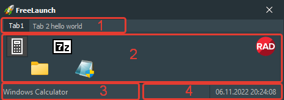

Interface elements:
-
Tabs
You can customize the number of tabs and rename each tab.
-
Tab content
You can place any number of shortcuts on multiple tabs.
-
Button information
Displays a description of the button that the mouse cursor is currently over.
-
Date and time
Shows the current date and time.